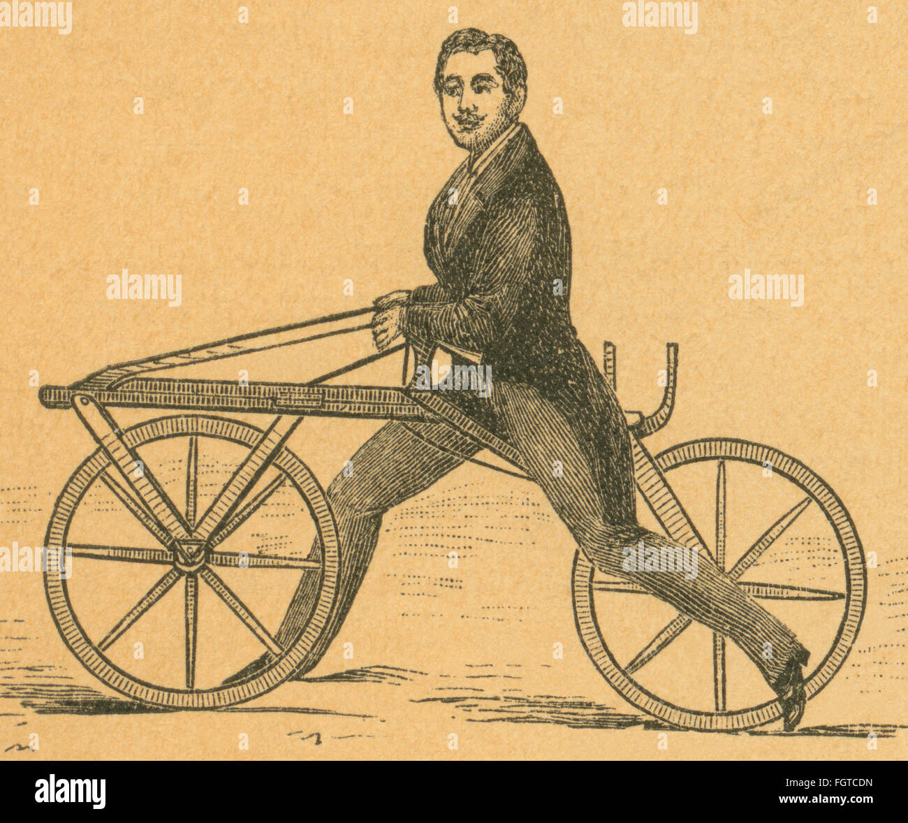
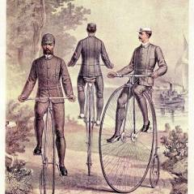
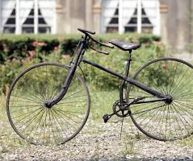
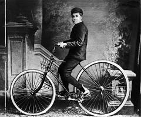
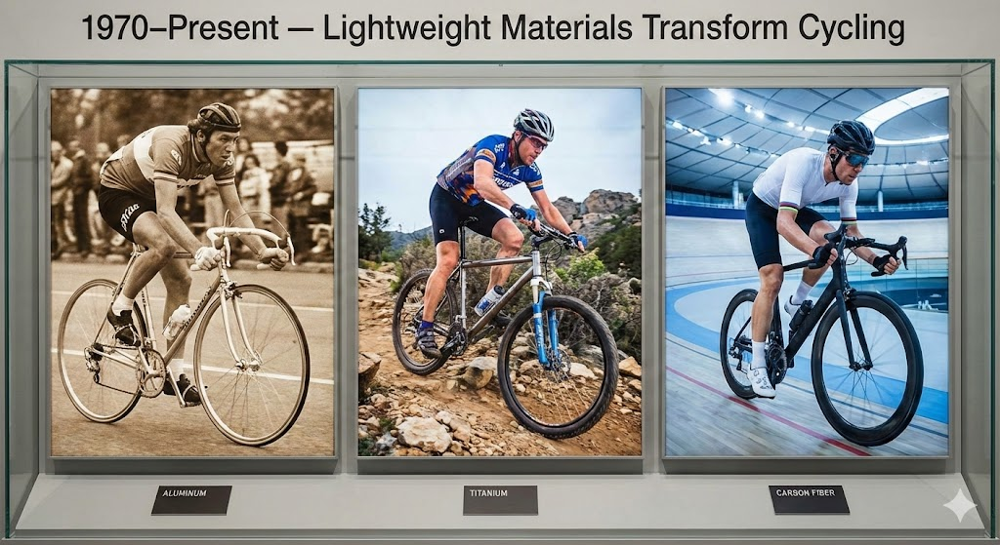

A visual journey through the key milestones that shaped the bicycles we ride today.

Often considered the first bicycle, this wooden two-wheeled invention introduced the concept of balancing on two wheels without pedals.

Known for its enormous front wheel, the Penny-Farthing became widely popular. It represented speed and innovation, though riding it was risky!

With equal-size wheels, a chain-driven rear wheel, and improved stability, this design became the foundation of the modern bicycle.

Air-filled tires revolutionized bicycle comfort, making rides smoother and dramatically improving performance.

Aluminum, carbon fiber, and titanium frames reduced weight and improved efficiency, paving the way for high-performance racing and mountain bikes.
E-bikes introduced pedal assistance, making commuting easier, promoting sustainability, and attracting millions of new riders worldwide.